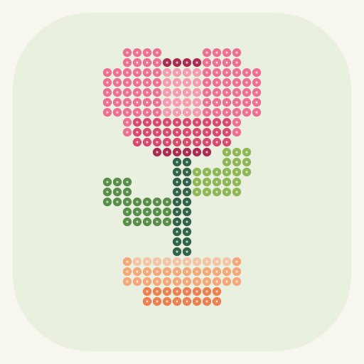

豆点 BEAD STUDIO把喜欢，拼成小小一颗
一张图片，一份拼豆图纸。
选张图，配好色。剩下的，慢慢拼。
01 选一张喜欢的图
从简单图案开始先试试看正在使用小花样例
02 调成你的配方
保持原图比例，长边按所选格数生成。透明区域不计入用量。
使用 48 色通用参考色。P 编号为本工具编号，非品牌色号；买豆前请对照实物色卡。
03 你的拼豆小作品
已生成—图纸格数
—总豆数 / 颗
—实际配色 / 色
—约占尺寸 / cm
备豆清单
点选颜色，在图纸上单独查看位置。
导出包含编号网格、行列坐标、配色与用量。尺寸按豆子间距估算。
完整图纸
当前环境未提供相册接口，可先查看图纸或截图。小红书内可直接保存至相册。